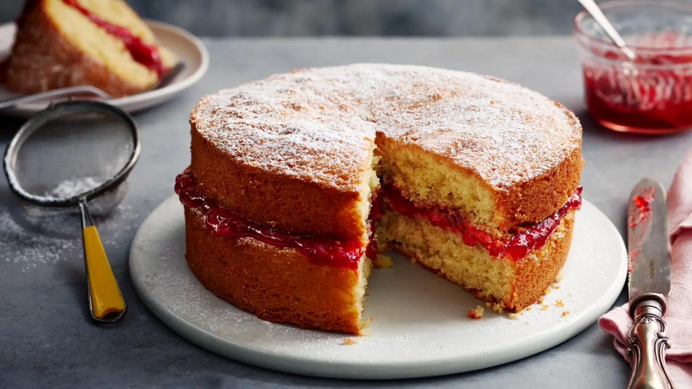

Victoria Sponge Cake

Description
This is a great cake that I will make for my brother's birthday. It's our favourite cake. When I was growing up, my mom used to make this cake and bring it to school for me to celebrate my birthday with my friends.
Ingredients
- 200g unsalted butter
- 200g caster sugar
- 4 large eggs
- 200g self praising flour
- 1 tsp baking powder
- 2 tbsp milk
- 1 tsp vanilla extract
For the filling
- 100-150g strawberry jam
- 100ml double cream
- handful of fresh strawberrries
Steps
- Preheat your oven to 180°C (160°C fan) / 350°F / Gas 4. Grease and line two 8-inch (20cm) round cake tins.
- Cream together 200g butter and 200g sugar until light and fluffy. Beat in the 4 eggs, one at a time. Fold in 200g self-raising flour and 1 tsp baking powder (plus vanilla & milk if using) until just combined.
- Divide the batter evenly between the tins and smooth the tops. Bake for 20–25 minutes, or until golden and springy to the touch. Let them cool in the tins for 5 minutes, then turn out onto a wire rack.
- Once completely cool, spread jam on one sponge. Top with whipped cream or buttercream, then sandwich the second sponge on top.
Return Home